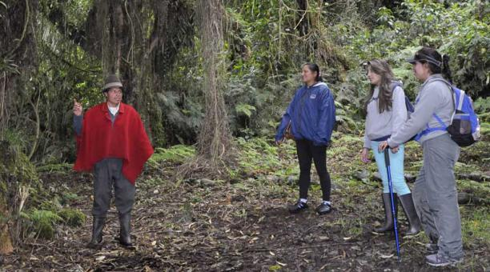

Un argentino y una colombiana acamparon en una montaña sobre el
cerro uritorco, al pasar la noche observaron un
destello luminoso
que los desperto y al salir de la carpa . Pudieron observar
un un sujeto o ser vivo con forma humanoirde a modo de
marciano que irrigaba un liquido
que se evaporaba en forma de niebla, para desparecer en medio de
ésta.
Actualmente la pareja sigue visitando el lugar, pero esta vez con
camaras fotograficas porque ninguno de sus amigos creen que el
marciano que irrigaba niebla fuera real.
Cuenta la historia que al dia de ho nunca lo volvieron a ver

Guia turistico cuenta la historia dentro del cerro uritorco
Un argentino y una colombiana acamparon en una montaña sobre el cerro
uritorco, al pasar la noche observaron un
destello luminoso
que los desperto y al salir de la carpa . Pudieron observar un
un sujeto o ser vivo con forma humanoirde a modo de
marciano que irrigaba un liquido que
se evaporaba en forma de niebla, para desparecer en medio de ésta.
Actualmente la pareja sigue visitando el lugar, pero esta vez con camaras fotograficas porque ninguno de sus amigos creen que el marciano que irrigaba niebla fuera real.
Cuenta la historia que al dia de ho nunca lo volvieron a ver
Guia turistico cuenta la historia dentro del cerro uritorco
Algunos consideran que los marcianos no son realmente reales. La mayor preguntas es entender si realmente vienen de marte, como podrian los comprobarlo. Sera una historia para profundizar si este querido extraterrestre decide volver a aparecer.